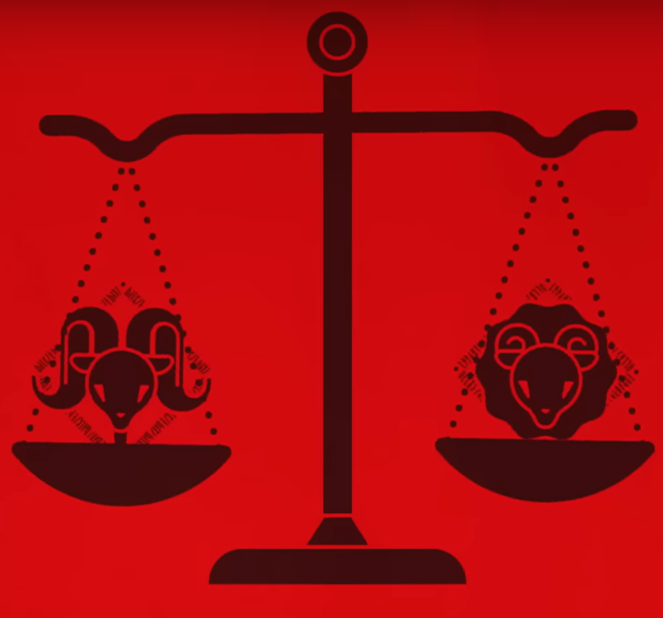

Milgram
O que é?
Milgram é um projeto onde pessoas que cometeram crimes são levadas à uma cadeia especial, o julgamento de seu crime estando nas mãos de um único guarda.
O significado de "crime" para MILGRAM é algo bem esparso: todos os prisioneiros cometeram um assassinato, mas o que é considerado assassinato para milgram não necessáriamente é considerado assassinato perante a lei.
Há certeza de que um crime foi cometido, entretanto, o que está sendo julgado é: seu crime, as razões que o levaram para cometê-lo, é imperdóavel? Ou perdóavel? Após saber de tudo o que fizeram, será possível dizer que são inocentes? Irá dizer que são culpados? Está é a principal ideia do projeto.
Um voto de inocente irá reafirmar as opiniões do prisioneiro positivamente, enquanto um voto de culpado irá negativamente impactar sobre suas opiniões. Você poderá votar aqui, decidindo se os personagens são inocentes ou culpados.
Verifique mais informações aqui, descubra mais informações sobre o projeto.